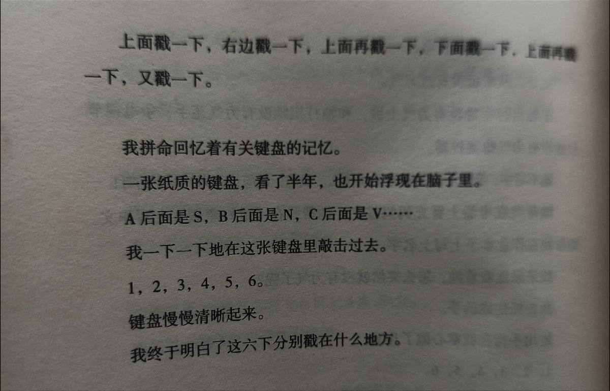
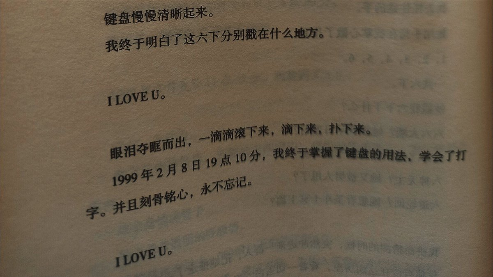
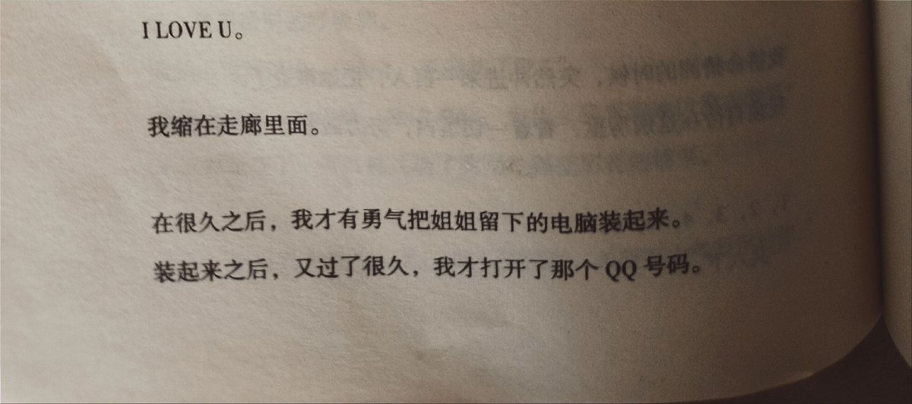
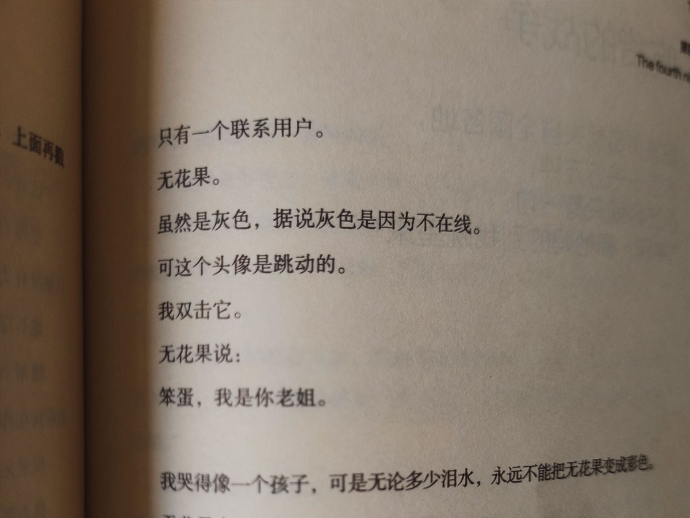

池鱼鱼🍥
@Chiyuyu520
希望所有人都能看看的文章：我觉得人类根本写不出这么酸涩的文字
从你的全世界路过
3
有关男女的问题，很小的时候，我问过姐姐。
我：“姐姐，什么叫淫荡？”
姐姐：“……热情奔放，活泼开朗。”
我：“姐姐你真淫荡。”
“啪。”我的左脸被抽肿。
我：“姐姐，什么叫下贱？”
姐姐：“……就是谦恭有礼，勤劳节约。”
我：“姐姐你真下贱。”
“啪。”我的右脸被抽肿。
我：“姐姐，什么叫爱情？”
姐姐：“……就是淫荡加下贱。”
我：“姐姐你一点儿也不爱情。”
过了半天，姐姐“嗯”了一声。
过了十年，我才明白，为什么泪水突然在她的眼眶里打转。
6
小时候家里只有一辆自行车。28英寸大杠永久。
爸爸说生日那天给我骑。
我仰天大笑：“哈哈哈哈，爸爸你终于不爱姐姐只爱我了。”
爸爸说：“你姐姐早就骑过了。”
过了几年，姐姐有了一辆自行车。每天上学都是她骑车带我。
我：“姐姐我骑车带你吧。”
姐姐：“滚。”
我：“妈的，老子力气太多了用不完。”
姐姐：“滚。”
9
姐姐教我打字花了半年的时间。打字课程，1998年8月27日开始教授，9月1日她回大学，自动转为函授。
我：“A后面不是B吗，为什么排的是S？B后面不是C吗，为什么排的是N？”
姐姐：“Christopher（打字机之父）发明的，跟我没有关系。”
我：“字母这么乱伦，姨妈和叔叔凑在一起，它们家谱和希腊神话一个教养。”
姐姐：“你他妈的学不学？”
我：“字母太乱伦了，玷污我的视线！”
姐姐：“让你掌握键盘的顺序，和乱伦有什么关系？”
我：“己所不欲，勿施于人，要是我摸你胸你一定用刀杀了我。”
“啪啪”。我左脸和右脸全部肿了。
姐姐：“学会打字对你有好处的，可以泡妞。”
我：“泡什么妞，我不如把钱省下来买三级片。”
姐姐：“你看你看，这叫作QQ，可以让远方的MM脱胸罩。”
我：“是黛安芬的吗？”
姐姐：“你学会了不就可以自己问了吗？！”
于是姐姐帮我申请了一个QQ号，然后两个人搜索各地的MM。在姐姐指导下，我加了一个北京MM, ID是无花果。
我有了点儿兴趣。
发了句话：Girl, fuck fuck，哈哈。
一点儿反应也没有。
我又发了句话：Dog sun, please fuck！
一点儿反应也没有。
我发火了，一下发了三句话：MBD, MBD, MBD。
姐姐发火了，说：人家头像是灰色的，说明不在线。
不在线，还Q什么，Q他妈蛋。
我立刻失去兴趣。
姐姐诱惑我，如果学会打字，就可以用流畅的语言勾引她。这被我断然拒绝，正直的青年，一定和我一样会拒绝的。
这些乱伦的字母，不是好东西。
1998年9月1日，姐姐回大学，把电脑带回去了。
我唯一遗憾的是，《仙剑奇侠传》没有通关，月如刚刚死在镇妖塔。
但姐姐不会这么小气吧？我就开始翻姐姐的房间。
我在她房间翻到的东西有：席绢的《交错时空的爱恋》，沈亚、于晴全集……这是什么玩意儿？星座是什么玩意儿？把所有东西摔出来，箱子底下是一张纸制键盘。
键盘上有一张字条：我知道你会翻到这里，麻烦你学习一下字母的顺序。
我大惊失色，全世界的姐姐都这么狡猾吗？
结果我就在纸质的键盘和电话里督促的声音中，过了一个学期。
我：“A后面为什么是S，而不是B？”
姐姐：“A后面是S, B后面是N。”
我：“复杂得要死。”
整整半年，我依旧不能理解字母为何如此乱伦。乱伦的东西，如我般正直，都不会学习的。
1999年2月7日深夜23点47分。
我依然等在火车站。
因为姐姐说她那一分钟回到家。
结果等到1999年2月8日早上4点30分。
姐姐被一辆闯红灯的轿车撞倒。
1999年2月8日17点48分，我赶到了北京。
房间一片雪白。
使者的翅膀雪白。天堂的空间雪白。病房的床单雪白。姐姐的脸色雪白。
她全身插满管子。
脸上盖着透明的呼吸器。
我快活地奔过去：“哈哈，不能动了吧？”
她脸上没有一丝表情，紧闭双眼，为什么我看到她仿佛在微笑？
要么我眼花了，要么她又偷了我写给隔壁班花的情书。
旁边一个穿白大褂的人说：“她不能说话，希望有力气写字给你。”
可是，姐姐抓不住笔。
这货，从来就没有过力气。
坐她自行车她没有力气上坡，和她打架她没有力气还手，争电视节目她没有力气抢遥控器。
她不写字，我就不会知道她要说什么。我想，她应该有力气写字的呀！
她帮我在考卷上冒充妈妈签字。她帮我在《过好寒假》上写作文。她帮我在作业本子上写上名字。
我呆呆地看着她，怎么突然就没有力气了呢？
我去抓住她的手。
她用手指在我掌心戳了几下。
1，2，3，4，5，6.
一共六下。
她戳我六下干什么？
六六大顺？她祝我早日发财？
六月飞雪？她有着千古奇冤？
六神无主？她又被男人甩了？
六道轮回？她想看圣斗士冥王篇？
我拼命猜测的时候，突然冲进来一群人，把她推走了。
我独自待在这病房里，看着一切雪白，努力戳着自己的手掌。
1，2，3，4，5，6.
一共六下。
上面戳一下，右边戳一下，上面再戳一下，下面戳一下，上面再戳一下，又戳一下。
我拼命回忆着有关键盘的记忆。
一张纸质的键盘，看了半年，也开始浮现在脑子里。
A后面是S, B后面是N, C后面是V……
我一下一下地在这张键盘里敲击过去。
1，2，3，4，5，6.
键盘慢慢清晰起来。
我终于明白了这六下分别戳在什么地方。
I LOVE U.
眼泪夺眶而出，一滴滴滚下来，滴下来，扑下来。
1999年2月8日19点10分，我终于掌握了键盘的用法，学会了打字。并且刻骨铭心，永不忘记。
I LOVE U.
我缩在走廊里面。
在很久之后，我才有勇气把姐姐留下的电脑装起来。
装起来之后，又过了很久，我才打开了那个QQ号码。
只有一个联系用户。
无花果。
虽然是灰色，据说灰色是因为不在线。
可这个头像是跳动的。
我双击它。
无花果说：
笨蛋，我是你老姐。
我哭得像一个孩子，可是无论多少泪水，永远不能把无花果变成彩色。
无花果永不在线。
如果还有明天，小孩子待在昨天，明天没有姐姐，姐姐在昨天用着Windows98。
到了今天，MSN退役，弄潮儿对着摄像头跳脱衣舞，我书房电脑的显示屏上，依旧挂着五位数的QQ，永远只有一个联系用户，并且头像灰色，永不在线，ID叫作无花果。
生育总是有一次阵痛。结果无数次阵痛。
相爱总是有一次分离。结果无数次分离。
四季总是有一次凋零。结果无数次凋零。
自转总是有一次日落。结果无数次日落。
然而无花果永远是灰色。
伤心欲笑，痛出望外，泪无葬身之地，哀莫过于心不死。
“我希望有一个如你一般的人如山间清爽的风 如古城温暖的光从清晨到夜晚 从山野到书房只要最后是你 就好”
——张嘉佳



